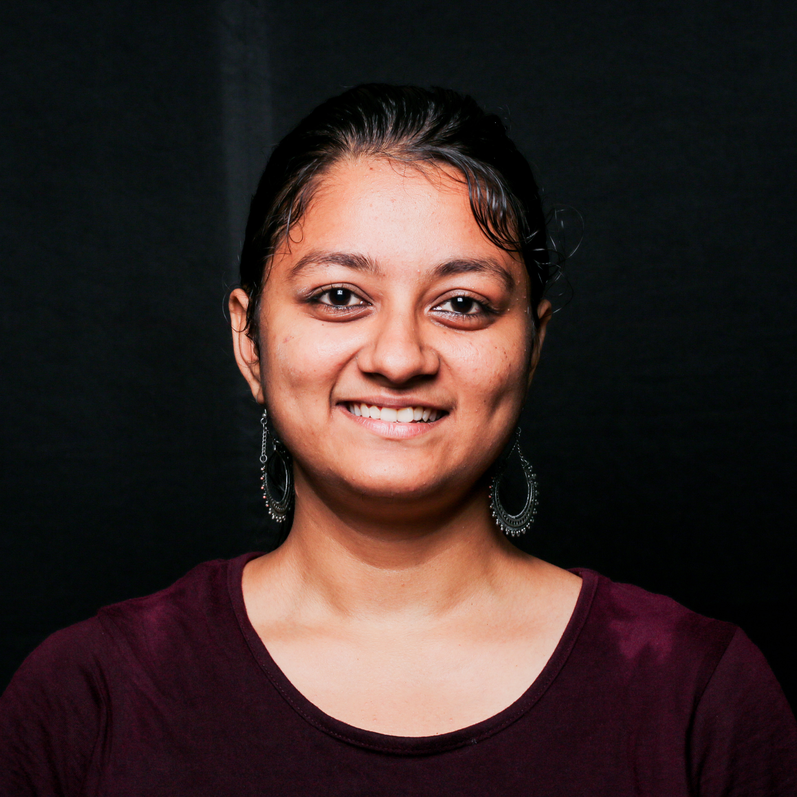
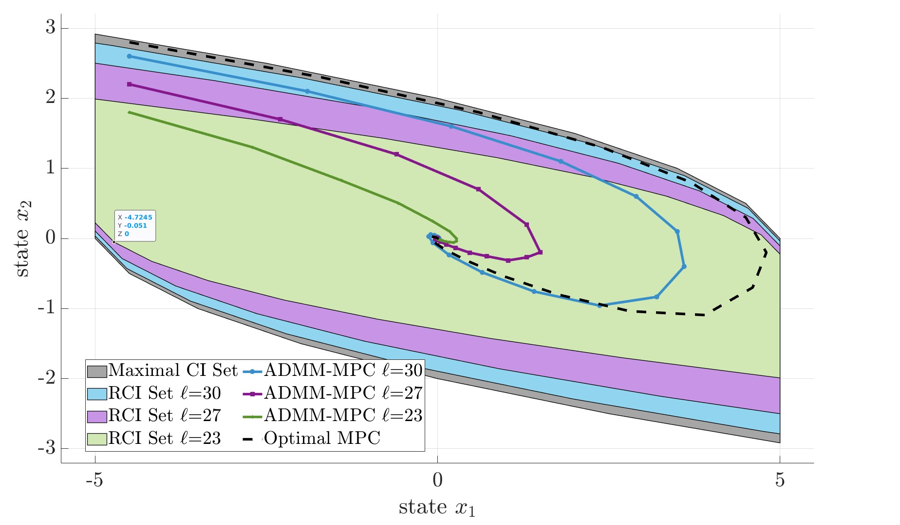

|
Anusha Srikanthan I'm a 4th year PhD student at the GRASP Lab, University of Pennsylvania in Philly, where I'm jointly advised by Nikolai Matni, an expert mathematician and Vijay Kumar, an expert roboticist. I'm motivated by problems that require rigorous mathematical guarantees while being practically useful for robot applications. My previous research was on the topic of guaranteeing dynamic feasibility in trajectory optimization for nonlinear systems via optimization theory, with applications to under-actuated robots. I've received the Excellent Paper Award for my Workshop paper on Resilient Task Allocation for Heterogeneous Robots at IROS 2021. |
 |
{kind=link}
ResearchI'm interested in the problem of safety in robotics using layered control, optimization theory, and machine learning. Most of my research is about discovering mathematical principles governing the design of decision-making hierarchies in task planning, trajectory design, and feedback control. Some papers are highlighted. |

|
ADMM-MCBF-LCA: A Layered Control Architecture
for Safe Real-Time Navigation
Anusha Srikanthan, Yifan Xue, Vijay Kumar, Nikolai Matni, Nadia Figueroa Submitted to ICRA, 2025 To tackle the combined challenges of state and input constaint satisfaction, dynamic feasibility, safety, and real-time computation, we present a layered control architecture (LCA) consisting of an offline path library generation layer, and an online path selection and safety layer. |
|

|
Closed-loop Analysis of ADMM-based
Suboptimal Linear Model Predictive Control
Anusha Srikanthan, Aren Karapetyan, Vijay Kumar, Nikolai Matni Submitted to LCSS with oral presentation at ACC, 2025 This paper proposes a suboptimal MPC scheme based on the alternating direction method of multipliers (ADMM). We show that using a warm-start approach combined with enough iterations per time-step, yields an ADMM-based suboptimal MPC scheme which asymptotically stabilizes the system and maintains recursive feasibility. |

|
Augmented Lagrangian Methods as Layered Control Architectures
Anusha Srikanthan, Yifan Xue, Vijay Kumar, Nikolai Matni Submitted to ICRA 2025 We propose the use of alternating direction method of multipliers algorithm (ADMM) on nonlinear optimal control problems to derive a layered control architecture. |

|
A Data-Driven Approach to Synthesizing Dynamics-Aware Trajectories for Underactuated Robotic Systems
Anusha Srikanthan, Fengjun Yang*, Igor Spasojevic, Dinesh Thakur, Vijay Kumar, Nikolai Matni IROS, 2023 (Oral Presentation) arXiv Motivated by the lack of existing methods to account for controller cost in trajectory planning for robotic systems, we propose a principle derivation to decompose a nonlinear optimal control problem into trajectory generation and feedback control layers. |
|
|
Concurrent Constrained Optimization of Unknown Rewards for Multi-Robot Task Allocation
Sukriti Singh, Anusha Srikanthan, Vivek Mallampati, Harish Ravichandar RSS, 2023 arXiv Task allocation in multi-robot teams is often hindered by unknown task reward functions. This work introduces the COCOA problem, addressed by a continuous-armed bandit algorithm, which uses online optimization to form coalitions that maximize unknown task rewards while respecting resource constraints in real time. |
|
|
Resource-Aware Adaptation of Heterogeneous Strategies for Coalition Formation
Anusha Srikanthan, Harish Ravichandar AAMAS, 2022 arXiv This work proposes a two-part framework that infers heterogeneous strategies from expert demonstrations and adaptively selects the best strategy for coalition formation based on a team's capabilities. Through numerical simulations, StarCraft II battles, and multi-robot emergency-response tasks, the framework outperforms existing approaches in requirement satisfaction, resource utilization, and task success rates. |

|
Resilient Task Allocation for Heterogeneous Robots
Anusha Srikanthan, Siddharth Mayya, Vijay Kumar, Nikolai Matni IROS 2021 Workshop, Excellent Paper Award This paper proposes a resilient task allocation framework for heterogeneous robot teams operating in dynamic environments. Our approach enables robots to adapt to failures and disturbances, improving task success rates. This work was awarded the Excellent Paper Award at the IROS 2021 Workshop. |
Invited Talks and Teaching |
Invited Talks and Teaching |
|
Augmented Lagrangian Layered Control Architectures for Underactuated Robotic Systems
Invited Talk at Microsoft Research, NYC, March 2024 Nonlinear Layered Control Architectures for Trajectory Planning in Underactuated Robotic Systems Invited Talk at ThirdWave Innovation, October 2023 Data-driven Synthesis of Dynamics-Aware Trajectory Generation for Underactuated Robots Invited Seminar at Caltech, August 2023 |
|
Graduate Teaching Assistant
University of Pennsylvania CIS 521: Applied Machine Learning (Spring 2023) ESE 204: Decision Models (Fall 2022) ESE 5300: Elements of Probability Theory (Fall 2022, Spring 2023) Instructor at Inspirit AI Taught machine learning and Python programming to high school students, Summer 2023 |
Education |
|
PhD in Electrical and Systems Engineering, University of Pennsylvania
GRASP Lab, August 2021 to Present Mentors: Dr. Nikolai Matni, Dr. Vijay Kumar GPA: 3.83 |
|
M.S. in Electrical and Computer Engineering, Georgia Institute of Technology
August 2019 to July 2021 Mentors: Dr. Harish Ravichandar, Dr. Sonia Chernova GPA: 3.90 |
|
B. Tech (Hons) in Electronics and Communication Engineering, National Institute of Technology, Trichy
July 2015 to May 2019 Mentors: Dr. P. Palanisamy, Dr. Varun Gopi GPA: 9.15/10 |